Cloud foundations
Infrastructure design & implementation
Secure cloud environments, networking, and workload architecture designed around your business and operational needs.

Cloud engineering & DevOps
We design, automate, secure, and operate cloud platforms that teams can rely on.
Talk to an engineerturndev.com
Explore↓What we do
We design, automate, secure, and operate dependable platforms across AWS, GCP, and Azure.
Cloud foundations
Secure cloud environments, networking, and workload architecture designed around your business and operational needs.
Automation
Repeatable cloud deployments and modern delivery pipelines, including migrations from legacy source control and CI systems.
Platform engineering
Production-ready container platforms, scalable application delivery, and version-controlled deployment workflows.
Cloud security
Security integrated into delivery workflows, with stronger IAM, workload identity, OIDC federation, and Kubernetes access controls.
Operations
Dashboards, alerts, autoscaling, incident response, SLIs and SLOs—plus hands-on troubleshooting for infrastructure, Kubernetes, and performance issues.
Our approach
Technology should give you room to move, not hold you back. We combine deep technical expertise with direct, human partnership—creating systems that adapt as your business grows.
Start a conversationWe begin with your business, your team, and the outcomes that matter.
We build clear, secure solutions without unnecessary complexity.
We stay close, improve continuously, and help you go further.
US ↔ UK
Why TernDev
Inspired by the Arctic tern, our name represents adaptability, resilience, and the confidence to keep moving through change.
With founders in the US and UK, TernDev brings together deep technical expertise and trusted local relationships to help businesses build, secure, and operate technology that can evolve.
Let’s move forward
Bring us the challenge. We’ll build a secure, reliable path forward.
info@terndev.com